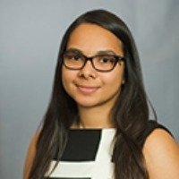
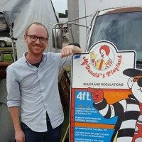
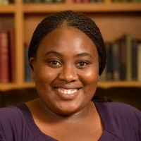

2017 Forum Fellowship Recipients
The DLF and its fellowship partners are excited to announce the recipients of the 2017 Forum Fellowship awards. These individuals, both from DLF member institutions and the wider GLAM community, show great dedication to their work and the field of digital libraries, and share in our community’s common goals. We look forward to learning from their insights and perspectives.
Jump to: HBCU Fellows, ARL+DLF Forum Fellows, DLF Student & New Professional Fellows, Library Juice+DLF Forum Fellow, ER&L Cross-Pollinator Fellow, Kress+DLF Forum Fellows.
HBCU Fellows
Pearl Adzei-Stonnes
Acquisitions Librarian, Virginia Union University
reflection
Nicola Andrews
NCSU Libraries Fellow, North Carolina State University
@maraebrarian
Danisha Baker-Whitaker
Archivist/Museum Curator, Bennett College
reflection
Dorothy Berry
Project Manager and Metadata Coordinator, University of Minnesota
reflection
Arneice Bowen
Head of Cataloging, North Carolina Agricultural and Technical State University
Elizabeth Jean Brumfield
Distance Services Librarian, Prairie View A&M University
Tatiana Bryant
Outreach and Promotion Librarian, Adelphi University
@bibliotecariat
Zakiya Collier
Master’s Candidate – New York University/Long Island
@melaninmoonchld
Chianta Dorsey
Reference Archivist, Amistad Research Center
Vanissa Ely Gosserand
Reference/User Services Librarian, Southern University
@vgosserand
Mary Jo Fayoyin
Dean, Library Services, Savannah State University
Kaneisha Gaston
Instructor, Livingstone College & MLIS student, North Carolina Central University
Jean Greene
Director of Library Services & Archives, Hinds Community College-Utica
Chris Iweha
Associate Director for Public Service, Morgan State University
@chrisiweha
Andrea Jackson
Executive Director, Black Metropolis Research Consortium
Laura Adair Johnson
Director of Library Services, Livingstone College
kYymberly Keeton
Independent Publisher, Art Librarian, bookista media group
@kymizsofly
reflection
Shatiqua A. Mosby-Wilson
Library Director, Southern University of New Orleans
Jessica C. Neal
University Archivist, Trinity University
@JestheArchivist
Ana Ndumu
Doctoral Student, Florida State University
Monika Rhue
Chair, HBCU Library Alliance & Director of Library Services, Johnson C. Smith University
Horacio Sierra
Assistant Professor, English Department, Bowie State University
horacio.sierra
Holly A. Smith
College Archivist, Spelman College
LeTisha Stacey
Digital Librarian/Archivist, Philander Smith College
@tisha1811
ARL+DLF Forum Fellows
Anastasia Chiu

Anastasia Chiu is a Cataloging and Metadata Librarian at Stony Brook University, where she supports metadata strategy for digital projects, as well as traditional cataloging. She is strongly interested in issues related to rights metadata for digital collections, and also hopes to build on her interest in diversity in library technical services. She is a 2017 ALA Emerging Leader.
Jennifer A. Ferretti
Jennifer A. Ferretti is the Digital Initiatives Librarian at the Maryland Institute College of Art. She has spent ten years in libraries, museums, and archives digitizing materials, curating exhibitions, and processing collections. Jennifer is a first-generation American Latina whose librarianship is guided by critical perspectives and anti-neutrality. She firmly believes art is information.
Christy Hyman
Phd student, History/Digital Humanities
University of Nebraska Lincoln
@activistHistori
I style myself as a “spatial humanist” not formally trained as a cartographer or geographer but very much involved with the connections between the human experience and place. My research explores the political imagination of historical actors while assessing how the attributes of landscape affected the human interactions taking place in the past.
It is my hope that at this year’s DLF Forum I can contribute as well as receive feedback on a panel I am a part of which focuses on critical cartography in the digital library. Attending DLF Forum will also allow me to gain further insight on user centered approaches with database design and the augmentation/ presentation of geospatial data.
Treshani Perera

I completed my coordinated dual masters degree in Library and Information Studies and Music History from the University of Wisconsin Milwaukee in August 2017. As a graduate intern for UW-Milwaukee Digital Collections and Initiatives, I served as the project intern for the Sheet Music Digital Collection, assisted with remediation of digital collections metadata, and created/selected name and name-title authority headings for a digital collection of a local arts magazine. I have extensive experience managing metadata & quality control operations for digitized audio-visual content and indexing oral histories using the Oral History Metadata Synchronizer (OHMS). My professional interests include digital access and preservation, music metadata and discovery, diversity and inclusion, and digital arts and humanities projects. After a career-inspiring first-time forum experience in 2016, I am excited to attend DLF Forum 2017 with support from ARL, and I look forward to more engaging conversations and learning opportunities during this year’s forum.
Jessea Young
Jessea Young earned a B.A in Art History at Cal Poly Pomona University specializing in Polynesian art. She received a M.S.L.I.S at Simmons College. Her thesis “Inknography” is a digital collection of oral histories and photographs of tattooed Asian/Asian Americans in Boston and Los Angeles. Presently, she is the Digital Collections Librarian at William H. Hannon Library, Loyola Marymount University. As a product of Chinese and Filipino immigration to the plantations of Hawai’i in the 1880s, she hopes to continue preserving the diversity of voices within the Asian American community through digital storytelling.
Students & New Professionals
David Bliss

David Bliss (@davidallynbliss) is Digital Processing Archivist at the Benson Latin American Collection at UT Austin. Together with other Benson staff, David manages post-custodial partnerships in Latin America. These partnerships allow vulnerable cultural heritage and human rights-related materials to be digitized, preserved, and made available to researchers without physically removing them from their original contexts in Latin America. David is a 2017 graduate of the University of Texas at Austin’s School of Information, where he was president of the UT student chapter of the Society of American Archivists. Prior to arriving at UT, David studied colonial Latin American and early modern European history at the University of New Mexico. David is broadly interested in responsible collecting practices, social justice in archives, and the transforming role of archivists in the age of digital records.
reflection
Deborah Caldwell
I am pursuing a Master of Information Science at the University of North Texas where I explore the intersections of digital literacy, data preservation, information stewardship, and cultural memory.
My background as an underprivileged, mixed-race child in a book desert and a first generation college student informs my interest in digital literacy and the justice of information access. I have a particular interest in stewardship of digital scientific research and government information. This spring, I organized #DataRescueDenton in coordination with the larger DataRescue movement, hackathon-style events aimed at creating trustworthy copies of at-risk government environmental data. Since then, I have been working with in the Preservation of Electronic Government Information (PEGI) Project, investigating and documenting government information preservation practices. When I am not studying or working on my own research projects, I work as a Graduate Student Assistant at UNT Willis Library maintaining a combined reference desk and assisting students, faculty, and community members with their research needs. I’m very excited to be attending the DLF Forum and look forward to all of the people and ideas I will encounter there.
reflection
Jane Kelly
I am the Historical & Special Collections Assistant at the Harvard Law School Library and an MSLIS candidate at the iSchool at Illinois. The work I’m most excited about these days is the HLS Community Capture Project, a grant-funded project that I’m managing to prototype a tool to facilitate born-digital collecting from student organizations at Harvard Law School. When I’m not working on that, you’ll likely find me with researchers in our reading room, managing our print collection of institutional, student, and faculty publications, or doing a little web archiving. I’m interested in the ways in which we can leverage technology in archives and the impact this work has on the people and communities who engage with archival material as donors, archives staff, researchers, and in roles we’ve yet to imagine.
reflection
Charlotte Kostelic
I am the National Digital Stewardship Resident for the Georgian Papers Programme hosted by the Library of Congress and Royal Collection Trust. The Georgian Papers Programme is an international, collaborative program that supports academic inquiry and technical development by making the papers of the Hanoverian monarchs accessible online for the first time. This program was established through a partnership between the Royal Collection Trust, King’s College London, College of William & Mary, and the Omohundro Institute for Early American History. By partnering with the Georgian Papers Programme, the Library of Congress aims to add context to the Georgian papers and create associations with early American collections. During my year-long residency I have split my time between Washington D.C. and Windsor, UK, researching metadata interoperability for the two institutions in an effort to connect 18th century collections with 21st century technologies and users. Before joining NDSR, I held positions at StoryCorps and the Barnard Archives and Special Collections.
Natalia Lopez
Natalia Lopez is the Digital Scholarship Librarian at the University of Delaware library. She received her Master of Science in Library Science at the University of North Carolina at Chapel Hill (UNC-CH) where she was selected for the Carolina Academic Library Associates program. At UNC-CH, she worked with Digital Research Services at Davis Library, supporting digital scholarship efforts, as well as the Southern Historical Collection as a Research and Instruction graduate assistant. She has also worked at North Carolina State University as a Research and Instruction intern. Prior to her work in libraries, she was a non-profit professional at immigrant rights and education non-profit organizations.
Chido Muchemwa

I am currently pursuing a Master of Science in Information Studies with a specialization in archival management and digital records. I am also a graduate intern at the Harry Ransom Center where I work in Reference and Digital Collections Services. My research interests include postcolonial archives, born-digital archives and digital preservation.
Nushrat Khan
I am currently a fellow at the North Carolina State University Libraries, where I am cross-appointed in the Digital Library Initiatives and on the linked data initiative with Acquisitions and Discovery Department. Prior to that, I received my master’s degree from the University of Illinois at Urbana-Champaign in May 2016.
I am not only passionate about learning new languages, but also enjoy learning new technologies and explore their usage for research and scholarship. As a new professional, my goal is to make scholarly digital resources more accessible to users with improved systems by integrating research skills with creativity and innovation. I am particularly interested in digital humanities, scholarly communication and educational informatics. DLF Forum has been a great venue for me to learn from and engage with other professionals since I first attended in 2015, and I am excited to continue my involvement this year as well.
Library Juice Fellow
Sandy Rodriguez
Sandy Rodriguez is Digital Special Collections Coordinator at the University of Missouri-Kansas City where she manages and oversees UMKC’s digital repository for special collections. She is an active digital stewardship advocate, currently spearheading born-digital curation efforts at UMKC. In 2016, she initiated the formation of the Digital Preservation Planning Subcommittee of the University of Missouri Libraries’ Committee on Digital Initiatives which is charged with the development of a digital preservation policy, conducting a self-assessment, and making recommendations to implement digital preservation practices and tools. Prior to shifting to her current role in 2013, she spent ten years focused on facilitating discovery to sound recordings as a music and sound recordings cataloger. She received her MSLS from the University of Kentucky in 2007 and a Bachelors of Music in Music Education in 2002.
ER&L Cross-Pollinator
Stacie Traill
Stacie Traill (@straikat) is a Metadata Analyst at the University of Minnesota Libraries. Prior to her current role, she held positions as Cartographic and Electronic Resources Cataloger and Special Formats Cataloging Coordinator also at the University of Minnesota. Stacie has worked extensively with electronic resources metadata and library discovery and management systems over the past decade. She has frequently presented and published on related topics, including e-book metadata quality and assessment, bulk metadata management, and e-resources troubleshooting.
reflection
Kress+DLF Forum Fellows
Fletcher Durant
Fletcher Durant is the Preservation Librarian at University of Florida Smathers Libraries. His work focuses on the preventive conservation of library and archival materials, the sustainability of cultural heritage, and risk management. He is a trained book and paper conservator and a Professional Associate of the American Institute for Conservation. Prior to joining the University of Florida, he was the Preservation Archivist for NYU Libraries and an Assistant Conservator for Special Collection at the New York Public LIbrary. He received his MSIS and CAS in the Conservation of Library and Archival Materials from the University of Texas at Austin and a BA from Wesleyan University.
Amy Marshall Furness
Amy Marshall Furness is the Rosamond Ivey Special Collections Archivist and Head, Library & Archives at the E.P. Taylor Library & Archives, Art Gallery of Ontario. Her work encompasses leadership of the library and archives, with special responsibility for building and advocating for the AGO’s collections of artists’ archives and related manuscript material. Amy holds graduate degrees in art history (Oxford University, 1997) and archival studies (University of Toronto, 2000). In 2012 she completed her doctorate at the Faculty of Information, University of Toronto, on the archives of Canadian artist Vera Frenkel.
reflection
Annie Sollinger
I am the Digital Image Metadata Librarian at UMass Amherst, as well as the liaison for digital humanities. I am a member of ARLIS/NA and VRA, which I believe can only benefit from this cross-pollination! I work closely with the Department of the History of Art and Architecture, in particular, to provide quality digital images and metadata, as well as research support. I am also slowly working on a master’s degree in that same program. My department, formerly known as the Image Collection Library, is growing into a new role as the Digital Scholarship Center. As we add to our traditional visual resources work, I am excited about building new services that are accessible and equitable from the ground up. I am hopeful about what I can learn from participating in this new-to-me community.
Richard J. Urban
As Digital Asset Manager & Strategist at the Corning Museum of glass, I am currently managing the transition to a new digital asset management system that will handle digital representations of our collections, events, and programs. With the new system serving as a firm foundation, I will be guiding CMoG’s efforts to make our collections available to new audiences online. We also recognize that management of our digital assets is only the first step towards a more robust digital preservation plan. I look forward all that the 2017 DLF Forum has to offer on sharing our collections as data, digital preservation, and our representations of cultural memory. Following on the heels of DLF, I will be celebrating the Museum Computer Network’s 50 years as a community where people and ideas cross-pollinate.